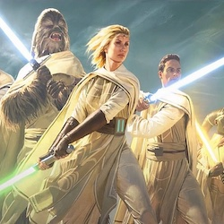
Acolyte (2024)
❌
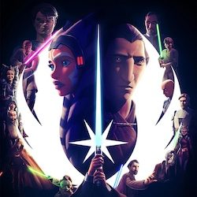
Tales (2022–2025)
❌❌❌
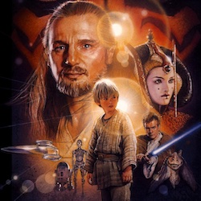
I (1999)
⭕
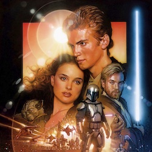
II (2002)
⭕
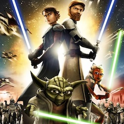
TCW-P (2008)
❌
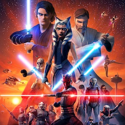
TCW (2008–2020)
⭕⭕⭕⭕⭕⭕❌
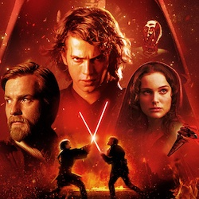
III (2005)
⭕
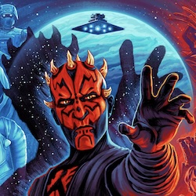
MSL (2026)
⭕
YJA (2023–2024)
❌❌
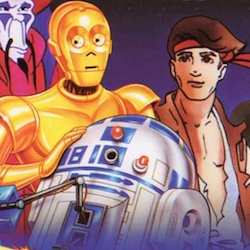
Droids (1985–1986)
❌
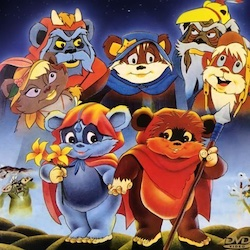
Ewoks (1985–1986)
❌❌
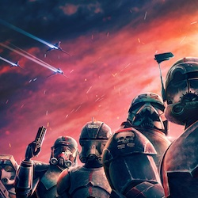
TBB (2021–2024)
❌❌❌
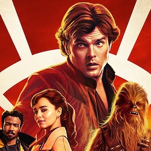
Solo (2018)
❌
OWK (2022)
❌
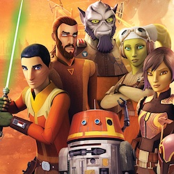
Rebels (2014–2018)
❌❌❌❌
Andor (2022–2025)
❌❌
Rogue One (2016)
⭕
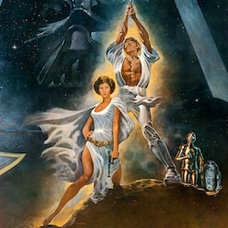
IV (1977)
⭕
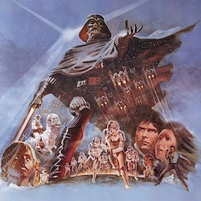
V (1980)
⭕
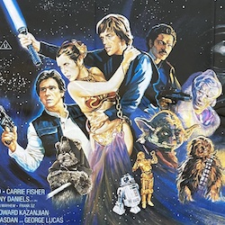
VI (1983)
⭕
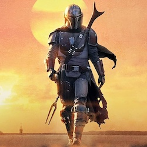
Mandalorian (2019–2023)
⭕⭕❌
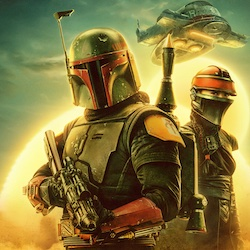
TBoBF (2021–2022)
❌
Ahsoka (2023–)
❌❌
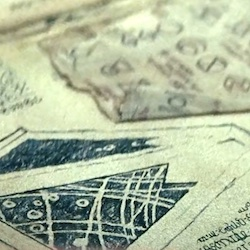
Skeleton Crew (2024–2025)
❌
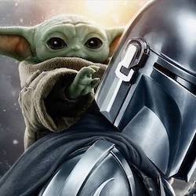
M&G (2026)
❌
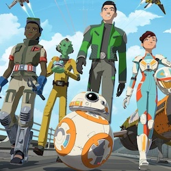
Resistance (2018–2020)
❌❌
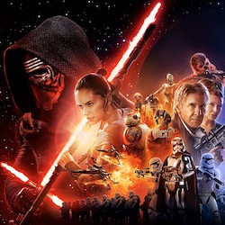
VII (2015)
⭕
VIII (2017)
⭕
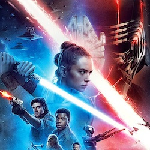
IX (2019)
⭕
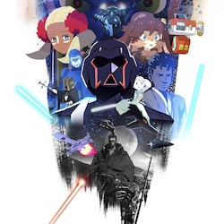
Visions (2021–2023)
⭕⭕